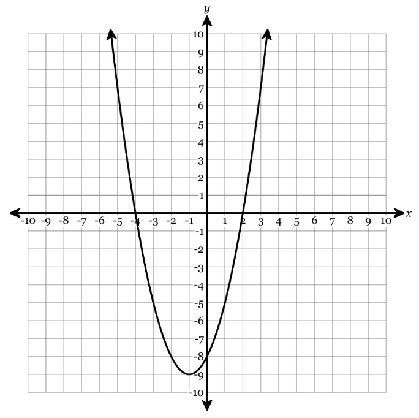
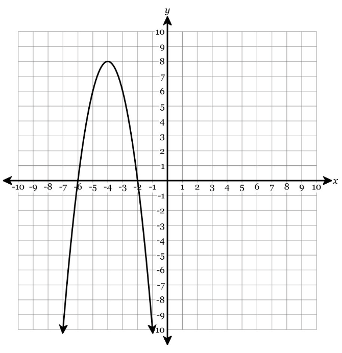

Show work and mark answers clearly.
1.
Use the graph to identify the quadratic features listed below.

- Mark and name the vertex.
- Draw or state the axis of symmetry.
- State whether the graph opens up or down.
- Identify any x-intercepts shown.
- State whether the vertex is a maximum or minimum and write the range.
Show work and mark answers clearly.
1.
Use each equation to identify the basic features that can be read directly or found quickly.
| Equation | Vertex | Axis | Opens | Max/min? |
|---|
| \(y=2(x-3)^2-5\) | | | | |
| \(y=-(x+4)^2+7\) | | | | |
For one equation, also state the range.
Show work and mark answers clearly.
1.
The graph and equation represent different quadratic functions. Identify the requested features for each.
Equation: \(y=x^2-6x+5\)
- For the graph: identify the vertex, axis of symmetry, x-intercepts, and range.
- For the equation: identify the y-intercept and whether it opens up or down.
- Explain which representation made each feature easier to see.
Show work and mark answers clearly.
1.
Complete the feature table for the quadratic functions.
| Function | Vertex | Axis of symmetry | Opening | Range |
|---|
| \(f(x)=\frac12(x+2)^2-8\) | | | | |
| \(g(x)=-3(x-1)^2+4\) | | | | |
Circle the function with a maximum value and explain how you know.
Show work and mark answers clearly.
1.
Use the graph to decide whether each statement is true. Correct any false statement.

- The vertex is a minimum.
- The axis of symmetry is a vertical line through the vertex.
- The range starts at the y-value of the vertex.
- The x-intercepts are the points where the graph crosses the x-axis.
Show work and mark answers clearly.
1.
A quadratic function has vertex \((-2,6)\), opens downward, and crosses the y-axis at \((0,2)\).
- State the axis of symmetry.
- State whether the vertex is a maximum or minimum.
- Write the range.
- Explain whether the y-intercept is enough information to find the x-intercepts without more work.